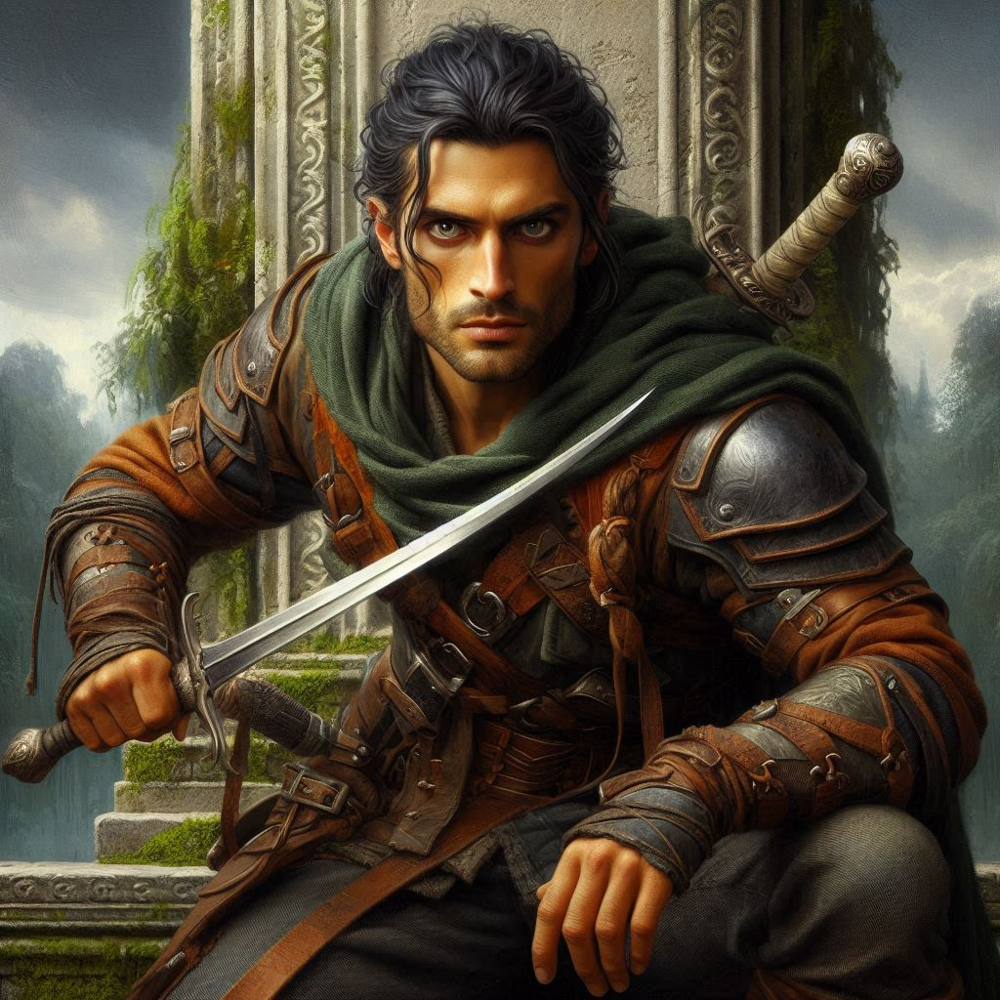
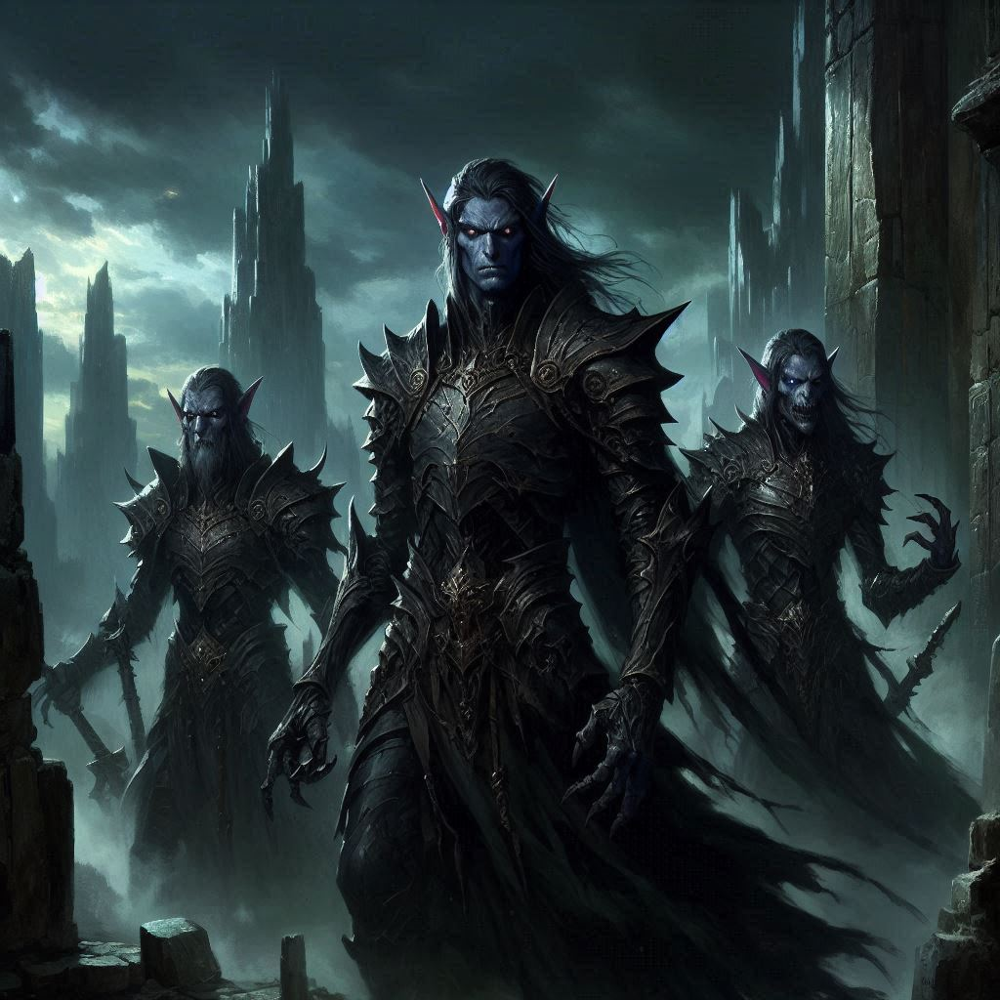

Defying Jorsh
The air hums with energy as Jorsh steps closer, his hand outstretched, eyes gleaming with a mixture of desperation and dark power. "Kira," he says softly, his voice almost pleading. "I didn’t leave Belladonna because I wanted to. Everything I’ve done was for you. For us. Together, we can stop Varis, claim the power of Hemlock Caverns, and save Belladonna."
“We can’t trust him, Kira,” Elias says, stepping forward.
Jorsh looks at Elias and then at you. He nods knowingly and shrugs. “I see,” Jorsh says with an emptiness in his voice that breaks your heart. “You’ve moved on. I mean, of course you have.” He closes his troubled eyes and inhales slowly.
You feel your heart clench at the sight of him, the boy you once loved—now a man twisted by ambition and magic. There’s a softness in his eyes, a hint of the past, but it's overshadowed by the dangerous intensity that radiates from him. His offer dangles before you like forbidden fruit. Part of you aches to reach for it. But you know better. You’ve seen the destruction that follows him.
“I always hoped we would be together again someday. But I see now this was a fool’s errand,” Jorsh stares at Elias and bows almost humbly. “I cannot expect you to love me anymore. All I ask is that you trust me. Follow me.”
“Jorsh, I can’t,” you whisper, taking a step back. “I’m not the same girl you left behind. And neither are you the same man.”
His expression falters, hurt flashing across his face. “You don’t understand. I did this for us. I’ve gained power—enough to challenge Varis, enough to destroy him and protect everyone. But I can’t do it alone. I need you, Kira.”
Beside you, Elias tenses. His hand brushes your arm, a quiet reminder that he’s here, standing beside you. You glance at him, his face filled with concern, not just for your safety but for the heartbreak you’re about to inflict on Jorsh—and yourself.
"I’m sorry," you say, your voice steady now, though your heart trembles. “I can't follow you down this path.”
Jorsh’s expression darkens, the softness replaced with a cold, sharp edge. “You’re making a mistake,” he hisses, his hand dropping to his side. “If you won’t stand with me, you’ll fall with them.”
Elias steps forward, drawing his blade. “Kira’s made her choice. And she’s with me.”
The tension snaps like a drawn bowstring. Before you can even process what’s happening, Jorsh’s eyes flare with dark magic. His hand shoots out, and a wave of shadow energy blasts Elias back. He slams into the stone wall of the ancient temple, his body crumpling to the ground in a heap.
“Elias!” you cry, rushing to his side. But as you kneel beside him, the sight of his still body sends a cold wave of horror through you. You check his pulse, his breath—but there’s nothing. He’s gone.
“Jorsh... what have you done?” Your voice shakes, raw with grief and fury.
Jorsh doesn’t answer at first. He just stands there, staring at the lifeless form of Elias with an unreadable expression. Then he looks at you, his face a mask of sorrow. “I didn’t want this. But you left me no choice, Kira.”
You rise to your feet, your heart pounding, filled with rage. “You murdered him,” you snarl, drawing your blade, every muscle in your body screaming for justice, for revenge. “I’ll never forgive you.”
He raises his hand once more, dark magic swirling at his fingertips. “This is your last chance,” he warns, his voice hollow. “Join me, Kira. Or die like the rest of them.”
You tighten your grip on the hilt of your sword, ready to fight, even knowing that you’re no match for him in this state. But before you can make a move, the walls of the temple begin to shake. The dark elves, who had been lying in wait, now chant in unison, their voices rising in a terrifying crescendo. Magic fills the air, thick and suffocating.
“Jorsh!” you shout over the din, but he’s already fading. His form dissolves into shadows, his voice echoing through the temple. “You’ve chosen your fate, Kira. I only hope you survive long enough to regret it.”
And then he’s gone.
The dark elves close in, their eyes glowing with malice, their weapons drawn. You fight with everything you have, your sword flashing in the dim light, but you’re outnumbered. For every one you strike down, two more take their place. The battle is desperate, hopeless.
Before long, you’re disarmed, your body bruised and bloodied. A dark elf commander grabs you by the arm, wrenching you to your knees. You struggle, but it’s useless. They have you.
“Kira of Belladonna,” the commander sneers in the ancient elvish tongue. “You will serve the Shadow Realm now.”
You spit at his feet, defiant even in the face of defeat. But inside, a hollow pit of despair opens in your chest. You failed. Elias is dead. Jorsh is lost to the darkness. And now, you’re being dragged into a fate worse than death.
As the dark elves bind your hands with shadowy chains, your vision blurs. The last thing you see before the world fades into darkness is Elias’s body lying motionless on the cold stone floor. You close your eyes, surrendering to the void, knowing that your journey has ended in tragedy.
The last thought that crosses your mind is a whisper of regret—a wish that things could have been different.
But it’s too late now.